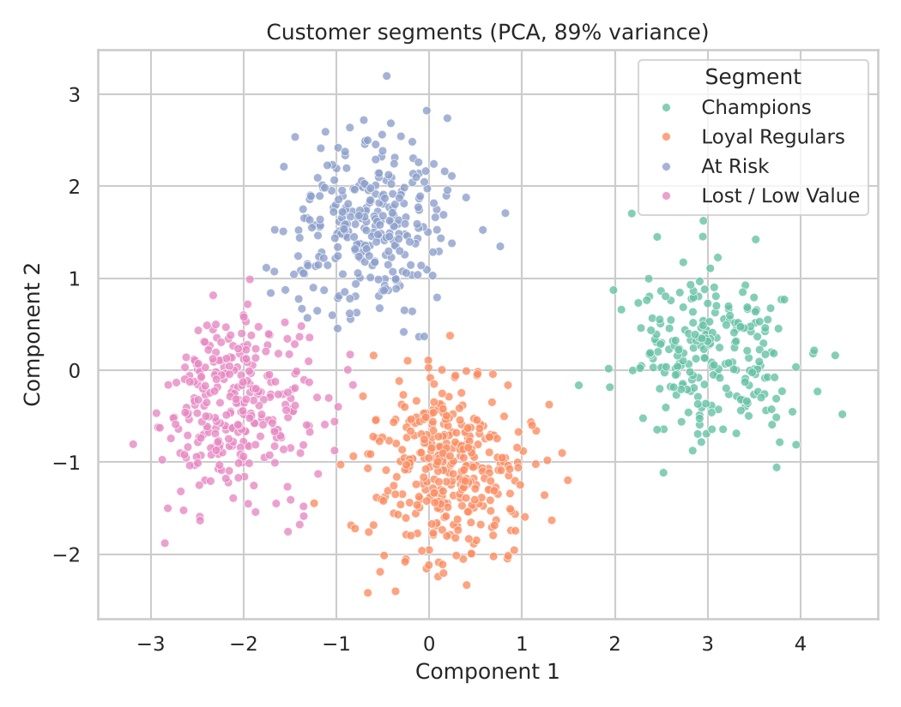
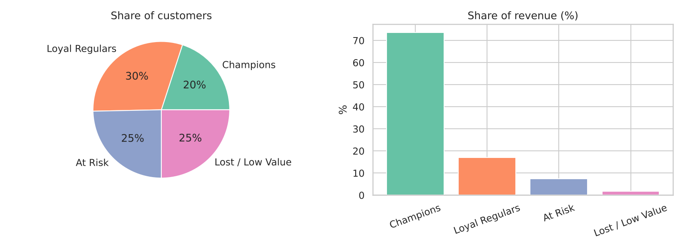
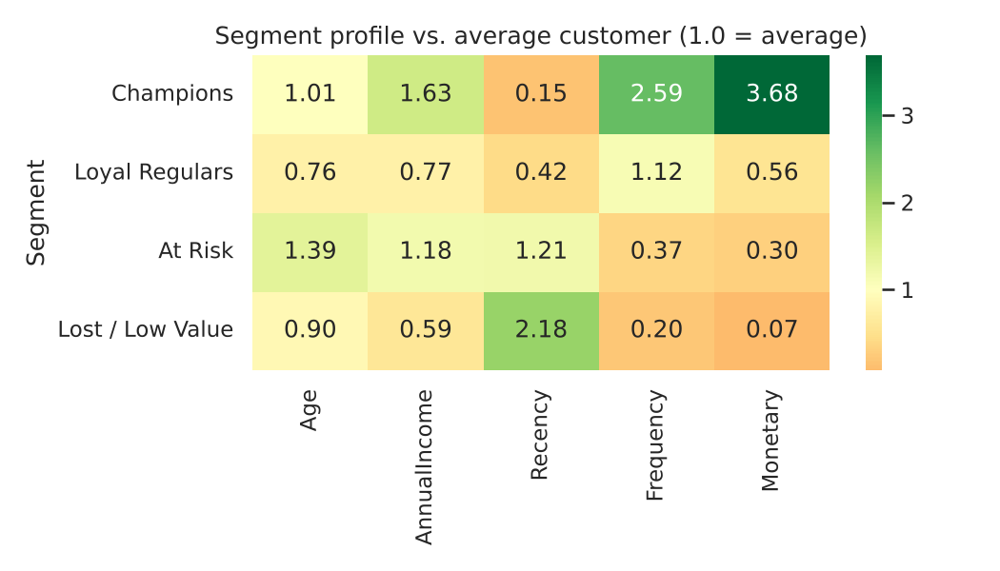
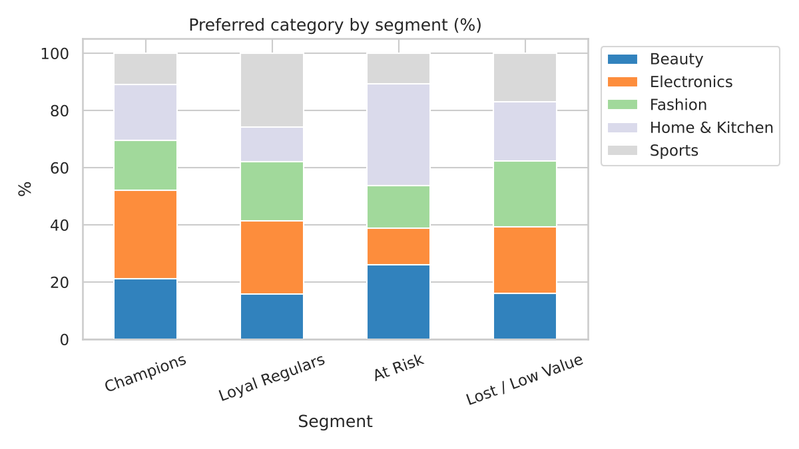
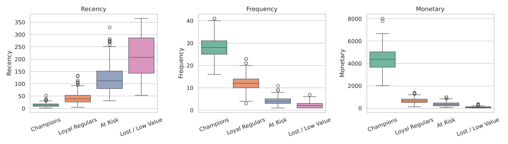
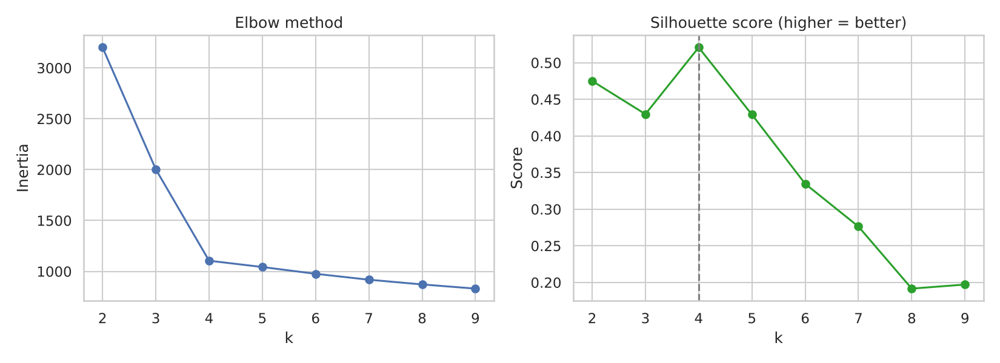

| Segment | Customers | % Revenue | Avg age | Avg income | Days since last order | Avg orders | Top category |
|---|---|---|---|---|---|---|---|
| Champions | 240 (20%) | 73.6% | 38 | 95,300 | 15 | 27.9 | Electronics |
| Loyal Regulars | 364 (30%) | 17.0% | 29 | 45,000 | 42 | 12.1 | Sports |
| At Risk | 296 (25%) | 7.5% | 52 | 68,600 | 120 | 4.0 | Home & Kitchen |
| Lost / Low Value | 300 (25%) | 1.8% | 34 | 34,700 | 217 | 2.1 | Electronics |





